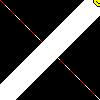

(PHP 4 >= 4.0.6, PHP 5, PHP 7, PHP 8)
imagesetstyle — 设定画线的风格
$image, array $style): bool
imagesetstyle() 设定所有画线的函数（例如
imageline()
和 imagepolygon()）在使用特殊颜色
IMG_COLOR_STYLED 或者用
IMG_COLOR_STYLEDBRUSHED 画一行图像时所使用的风格。
image由图象创建函数(例如imagecreatetruecolor())返回的 GdImage 对象。
style
像素组成的数组。你可以通过常量 IMG_COLOR_TRANSPARENT 来添加一个透明像素。
成功时返回 true， 或者在失败时返回 false。
下面的示例脚本在画布上从左上角到右下角画一行虚线：
示例 #1 imagesetstyle() 例子
<?php
header("Content-type: image/jpeg");
$im = imagecreatetruecolor(100, 100);
$w = imagecolorallocate($im, 255, 255, 255);
$red = imagecolorallocate($im, 255, 0, 0);
/* 画一条虚线，5 个红色像素，5 个白色像素 */
$style = array($red, $red, $red, $red, $red, $w, $w, $w, $w, $w);
imagesetstyle($im, $style);
imageline($im, 0, 0, 100, 100, IMG_COLOR_STYLED);
/* 用 imagesetbrush() 和 imagesetstyle 画一行笑脸 */
$style = array($w, $w, $w, $w, $w, $w, $w, $w, $w, $w, $w, $w, $red);
imagesetstyle($im, $style);
$brush = imagecreatefrompng("http://www.libpng.org/pub/png/images/smile.happy.png");
$w2 = imagecolorallocate($brush, 255, 255, 255);
imagecolortransparent($brush, $w2);
imagesetbrush($im, $brush);
imageline($im, 100, 0, 0, 100, IMG_COLOR_STYLEDBRUSHED);
imagejpeg($im);
imagedestroy($im);
?>
以上例程的输出类似于：
